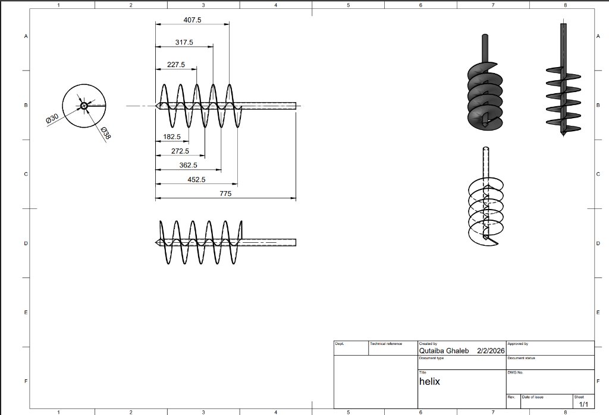

The Challenge
Traditional auger designs require complete remodeling when scaling for different soil types or machinery mounts. Manual rescaling of helical geometry is error-prone — a single inconsistent dimension breaks the manufacturing drawings. Parametric modeling eliminates this by making the geometry respond to a variable table rather than hardcoded sketch dimensions.
The Solution
Equation-driven helix geometry
The flighting path is defined by mathematical relations in SolidWorks' Equation Manager, not by manually positioned sketch entities. Changing the shaft diameter propagates through pitch, outer diameter, and flight curvature automatically.
Sheet metal flat-pattern for laser cutting
The flighting is modeled as sheet metal so it can be unrolled into a flat DXF pattern — export directly to laser cutter without manual layout calculation. Bend allowances are embedded in the model.
Automated fabrication drawings
2D technical drawings update automatically when the 3D model changes. All dimension annotations are driven by the same equation table — no manual redimensioning after a scale change.
Spec Sheet
